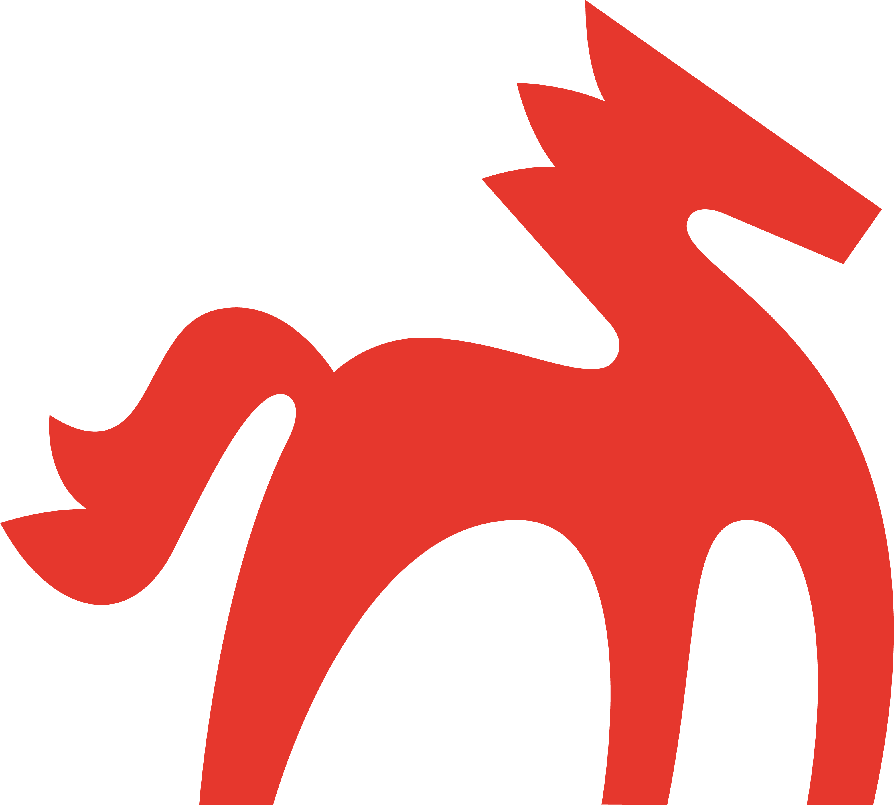

Аудит, конкуренты, контентная стратегия
и медиаплан Росмолодёжи на 12 месяцев

В MAX выходит 888 публикаций в месяц — лидерский показатель. Но прирост подписчиков — всего 1,6% в месяц, конверсия просмотров в подписки — 0,2%.
Не увеличивать объём, а перестроить модель работы. Применить практики роста MAX, внедрить видео-трансляции, запустить эксклюзивный контент. Превратить MAX в первоисточник, на который ссылаются внешние СМИ.
| Платформа | Сейчас | Конец 2026 |
|---|---|---|
| MAX — основной канал | 22 489 | 75 000–80 000 |
| MAX — нишевые каналы (×3) | 0 | 25 000+ совокупно |
| ВКонтакте — ER | 0,7% | 2,5–3% |
| fadm.gov.ru — посетители/мес | 1 244 | 15 000 |
| Дзен — подписчики | 757 | Решение в первый месяц |
MAX — не одна из площадок. Это новая основа цифрового присутствия Росмолодёжи на 2026 год. Все остальные платформы должны работать на него.
| Формат | Доля | Оценка |
|---|---|---|
| Фото | 82,6% | Доминирует — избыточно |
| Видео | 13,0% | Критически мало |
| Текст без медиа | 4,3% | — |
Канал работает в режиме «много контента, медленный рост». Алгоритм готов поддерживать рост — нужно дать ему качественный контент и форматный баланс.
| Дата | Формат и тема | Просмотры |
|---|---|---|
| 25.04 | Видео. «Единство — это…», нарезка ответов участников Слёта РСО | 2 840 |
| 24.04 | Карточка-дайджест. «Аромат мяты повышает концентрацию» + ⚡ новости | 3 385 |
| 24.04 | Анонс. «Солдатский конверт — 2026», конкурс патриотической песни | 3 426 |
| 24.04 | Анонс. «Бессмертный полк онлайн», как принять участие | 3 995 |
| 24.04 | Карусель из 6 фото. «Подняли архивы наших мам» | 5 072 |
| 23.04 | Анонс. «Страна глазами молодёжи!», конкурс блогеров | 5 921 |
| 23.04 | Карусель из 4 фото. «За кулисами авиационного производства» | 5 710 |
| 23.04 | Карточка. Призыв к Всероссийской неделе субботников | 6 121 |
| 22.04 | Карточка-дайджест. «Шум влияет на аппетит» + ⚡ новости | 6 626 |
| 22.04 | Карусель из 3 фото. Лейла Зотова в Аргентине | 6 425 |
Внедрение хотя бы 5 из 8 практик до конца июня 2026 → прирост подписчиков с 1,6% до 8–10% в месяц. Удвоение аудитории за полгода.
| Тема | Доля |
|---|---|
| Возможности (гранты, форумы, конкурсы) | 40% |
| Герои (истории молодых россиян) | 20% |
| Образование и карьера | 15% |
| События страны | 15% |
| Жизнь агентства | 10% |
Сеть каналов в MAX к концу 2026: ~100 000 человек — в 4,5 раза больше текущей базы.
| Голос | Тип контента | Доля |
|---|---|---|
| Деловой | Анонсы, официальные новости, цифры | ~40% |
| Человеческий | Истории людей, закулисье | ~40% |
| Эмоциональный | Праздники, патриотика, культура | ~20% |
База ВКонтакте (268 тыс.) → воронка для MAX. Каждый материал содержит ссылку, каждое видео — QR-код.
| Показатель | Сейчас | 6 мес. | 12 мес. |
|---|---|---|---|
| Посетители/мес | 1 244 | 5 000 | 15 000 |
| Запросов в топ-10 | ед. | 20–30 | 60–80 |
| Конверсии/мес | 132 | 500 | 1 500 |
| Переходы → MAX | 0 | 500 | 2 000 |
Вариант А — перезапуск с фокусом на SEO-лонгриды и переадресацию трафика на MAX-канал. Дзен = третий источник трафика для MAX после сайта и ВКонтакте.
Лучший брендинг в нише (Код молодёжи от Студии Лебедева) · Лидерство по объёму публикаций в MAX · Крупнейшая база ВКонтакте (268 тыс.)
| Платформа | Что работает лучше всего | Идеальный формат |
|---|---|---|
| MAX | Эксклюзивы, дайджесты, карусели, трансляции | Карточка с фактом + 3–5 новостей; видео-эфир |
| ВКонтакте | Короткие видео, истории, эмоциональный контент | Клип 15–60 сек + короткий текст + ссылка на MAX |
| Дзен | Лонгриды под поисковые запросы, разборы | Статья 2 000–4 000 знаков + врезка с MAX |
| Сайт | Точка завершения целевого действия, SEO | Лендинг программы + кнопка «Поделиться в MAX» |
MAX — финальная точка коммуникации. Все остальные платформы работают как привод трафика на главный канал.
| Месяц | Событий | Состояние |
|---|---|---|
| Январь | 7 | Требует доработки |
| Февраль | 3 | Критически мало |
| Март | 5 | Недостаточно |
| Апрель | 28 | Перегружен (40%!) |
| Май–Июль | 0 | Полностью отсутствует |
| Август | 5 | Недостаточно |
| Сентябрь | 4 | Недостаточно |
| Октябрь–Ноябрь | 15 | Минимально приемлемо |
| Декабрь | 3 | Критически мало |
| Уровень | Что это | Частота |
|---|---|---|
| Регулярные рубрики | Постоянные тематические рубрики с привязкой к дням | Каждую неделю |
| Эксклюзивы для MAX | Контент, выходящий сначала в MAX | Минимум 3 раза в неделю |
| Видео-трансляции | Прямые эфиры через ВК Видео в MAX | 1–2 раза в месяц |
| Реактивный контент | Реакция на инфоповоды дня и тренды | Ежедневно |
| Сезонные кампании | Темы, привязанные к жизни молодёжи | 4–6 в год |
Тихий уважительный патриотизм без лозунгов. Диалог вместо шока. В MAX этот тон работает особенно сильно — мессенджер как личное пространство.